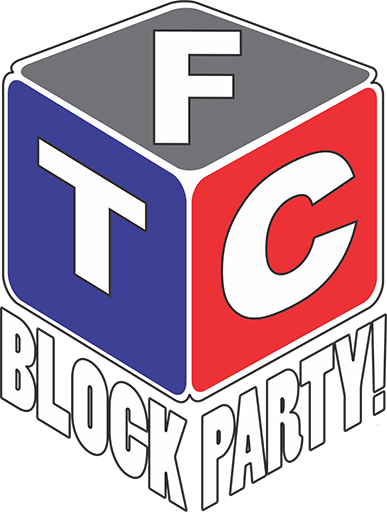

Overview
Welcome to the 2013-2014 FTC BLOCK PARTY!SM Below, you will find all of the documentation on the game and how to build an official field.
* Middle/High School students in the US, Canada, and Mexico
Challenge Homepage
Video Downloads (for Schools)
Video Downloads
These download links are for schools without access to YouTube. Don't have Windows Media Player? Get VLC or a QuickTime Codec.
Game Animation (MPG, 6:18)
Game Animation Transcript (DOC)